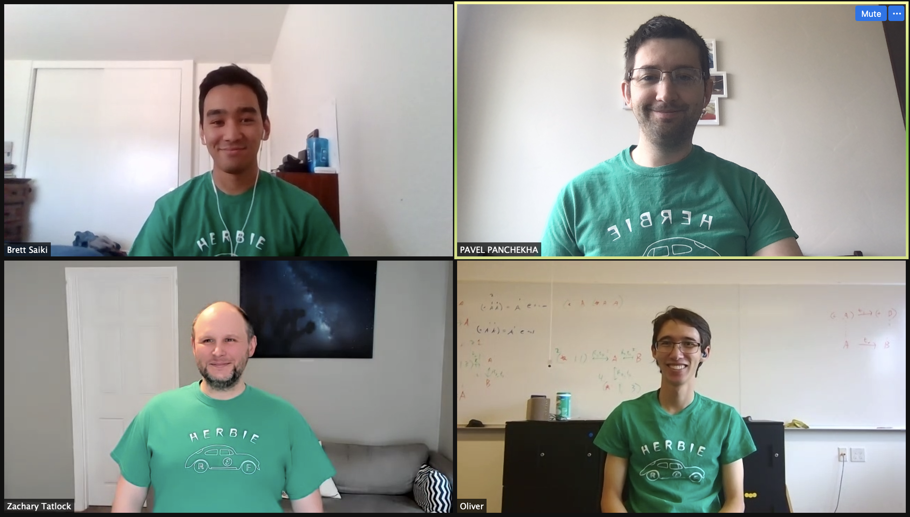

The Herbie developers are excited to announce Herbie 1.5! This release focuses on multiple precisions, new syntax, and higher accuracy. Our favorite features are below.
What is Herbie? Herbie automatically improves the accuracy of floating point expressions. This avoids the bugs, errors, and surprises that so often occur with floating point arithmetic.
Join us! Join the Herbie developers on the FPBench Slack, at the monthly FPBench community meetings, and at FPTalks 2021, where Brett will be talking about Herbie 1.5.

Traditionally, Herbie has been all about giving you the most accurate way possible to evaluate some mathematical expression. But many of our users need to balance accuracy with speed.
So Herbie 1.5 has an experimental new pareto mode. When the pareto mode is turned on, Herbie produces multiple outputs that trade off speed for accuracy. Run Herbie with --pareto to try it out, and if you're interested in more details of how it works, check out our paper at ARITH'21.
We've been working hard improving Herbie's results on its traditional task: finding the most accurate way to evaluate a mathematical expression. In Herbie 1.5, several improvements landed, but the most exciting is the symmetric expressions mode.
Simply put, it's pretty common for Herbie to be asked to
improve the accuracy of an expression where reordering the variables
leaves the expression unchanged—something like
log(exp(x) + exp(y)).
Often the best way to evaluate that expression requires determining
which of x and y is larger.
With symmetric expressions, Herbie can detect when variable order doesn't matter and sort the variables up front. That often lets Herbie's other components find a clever way to improve accuracy.
(FPCore dist2 (x y)
(+ (* x x) (* y y)))
(FPCore (x y)
(/ (sqrt (+ (dist2 x y) x)) (sqrt 2)))
dist2 function, and the
second uses that definition. The result is shorter and more
readable.While most people use Herbie via the web interface, Herbie also supports the standard FPCore format. FPCore offers more control over Herbie, and it's also a good output format for other tools. In this release, we extended Herbie to support function definitions.
In short, an FPCore can now include a function name between
the FPCore keyword and the list of variables. That core
can then be referenced by other cores in the same file. Herbie will
automatically expand those calls before improving the expression.
egg-herbie support package has been merged
into Herbie proper. This means that if you want to install Herbie
from source, you will now need a Rust compiler.:precision flag instead.We want Herbie to be more useful to scientists, engineers, and programmers around the world. We've got a lot of features we're excited to work on in the coming months. Please report bugs, join the mailing list, or contribute.
If you find Herbie useful, let us know!